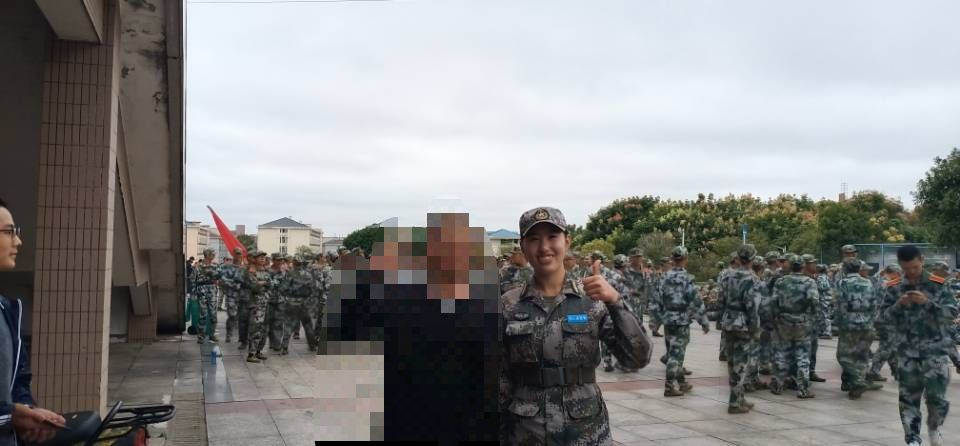
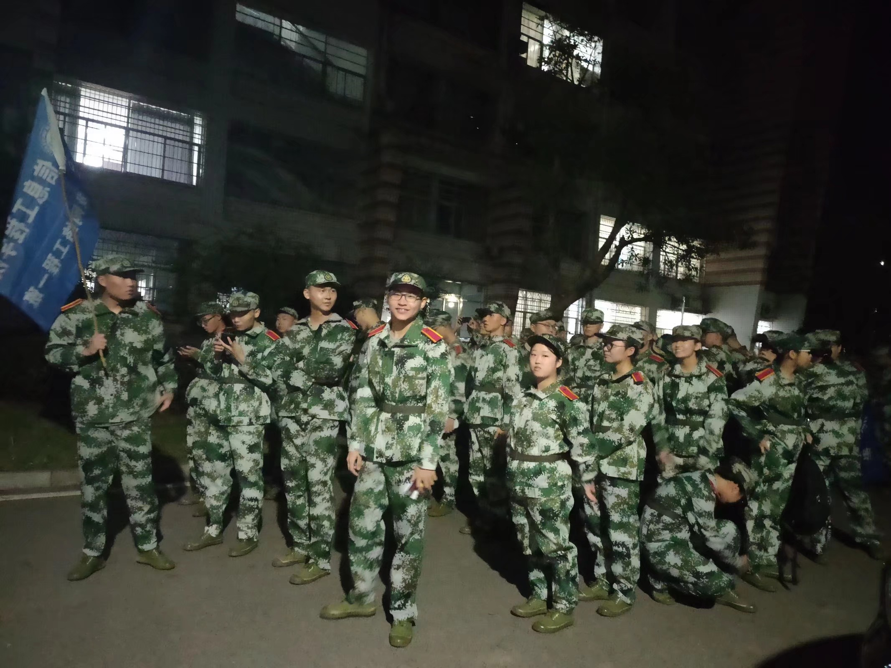
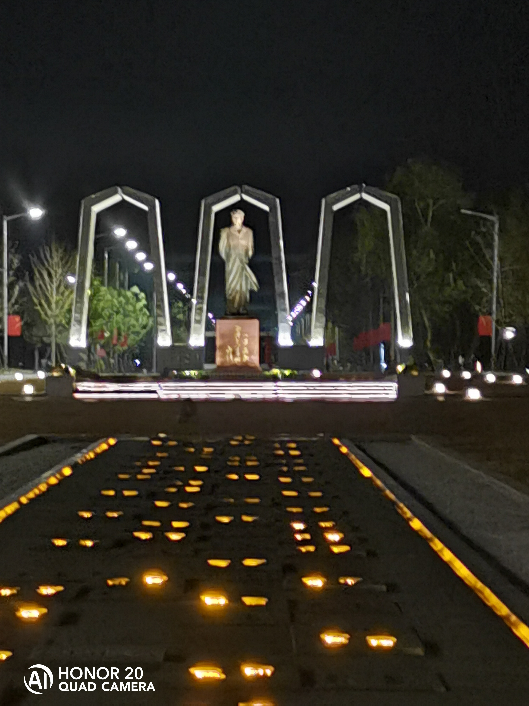
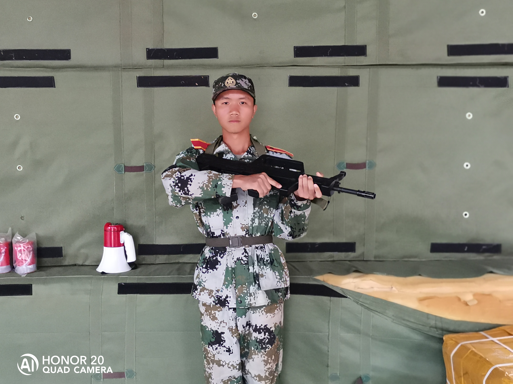
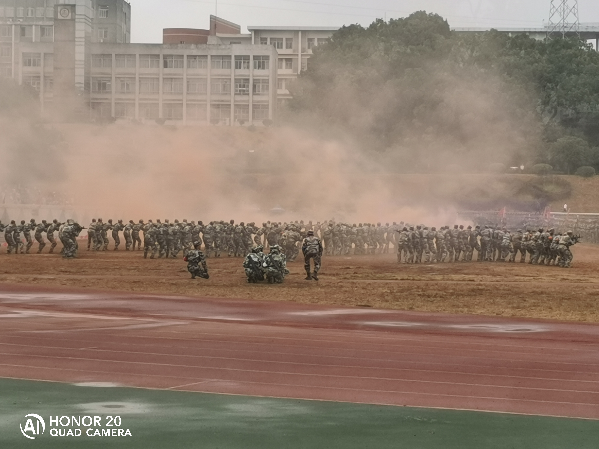

Then,let's talk and see something concrete.
军训（A beauti thing）
军训，是一种考验，也是一种磨练。短短的五天，让我明白了人生中的道理：一份耕耘，一份收获。同时，也培养了我坚强、独立、吃苦耐劳、不怕脏以及强烈的集体荣誉感。
军训刚开始，大家真是叫苦连天，适应不了这种生活。但是，我们作为一名踏入新校的初中生，怎么能连这么点苦都受不了呢?这是我们的第一炮，怎能不打响就投降呢?现在，我们早已不是家里的大少爷，娇小姐，我们站在训练场，面对教官，就意味着我们现在是一名军人!我们要有军人严明的纪律，说一不二的作风以及钢铁般的意志! [2]
炎热的夏日，骄阳似火，连续几个小时的操练，让我们吃尽了苦头。单调乏味的军训日复一日，头顶上的烈日记录着我们的汗水。军姿、蹲起、行进……一系列的动作不停地重复，直到教官满意的点点头，我们才算“过关”。我们就是这样，一步一步苦练过来的。
最后一天，我们来到大操场开始阅兵和领奖。领奖的时候我们班只拿到了两个奖，我觉得之所以我们没拿到更多的奖状，是因为我们没有团结好和没有休息好。军训完了一天后我觉得很累，第二天起床也没有精神，脚还很痛。真是一次难以忘怀的军训，它让我深深地盛触那句话：一份耕耘，一份收获。你只要付出了，就一定会有相应的收获，你付出的越多，收获的也就越多。人生往往是这样。虽然，这五天来的军训是前所未有过的艰苦，但它也是我这一生中最美好的回忆。




